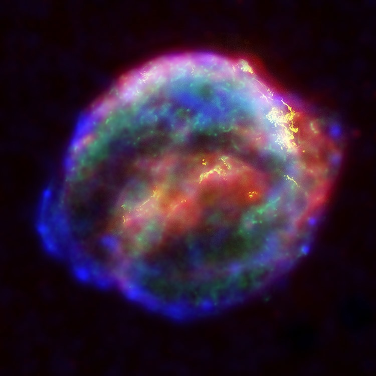

¿Qué es la evolución estelar?
La evolución estelar describe los procesos de formación, vida y muerte de una estrella. Desde su nacimiento en una nebulosa hasta su fin como enana blanca, estrella de neutrones o incluso agujero negro.
Fases principales de una estrella
Una estrella pasa por varias etapas a lo largo de su vida, incluyendo la formación en nebulosas, la secuencia principal, la fase de gigante roja y, finalmente, su colapso.
Tipos de estrellas
Dependiendo de su masa, las estrellas pueden acabar de diferentes maneras. Las estrellas masivas tienen destinos más extremos, como convertirse en supernovas.
